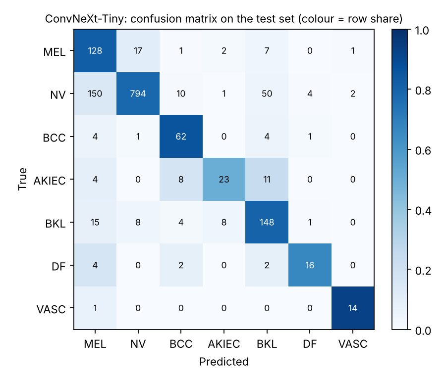

Skin lesion classification on ISIC 2018
Computer vision for medical images, a follow-up to my MSc capstone
My capstone model (ResNet-50) reached 76.7% accuracy but found only 36% of melanomas, and it had been tested on a split where photos of the same lesion could appear in both training and test data. In this follow-up I rebuilt the evaluation first, then the model.
- Split the 10,015 HAM10000 images by lesion, so no lesion is in both train and test.
- Chose models on validation data only and scored the test set once, with 95% bootstrap confidence intervals.
- Replaced ResNet-50 with ConvNeXt-Tiny at 384 px and class-balanced sampling.
- Fixed a melanoma screening threshold on validation data for 90% sensitivity.
| Model | Balanced accuracy | Macro AUC | Melanoma sensitivity |
|---|---|---|---|
| ResNet-50 baseline | 0.713 | 0.932 | 62.2% |
| ConvNeXt-Tiny | 0.767 | 0.966 | 82.1% |
With the screening threshold, the model flags 94.2% of test melanomas at 75.5% specificity. The weak points are clear too: false alarms on benign moles and a drop on actinic keratosis (46 test images). A paper on this work is in preparation.

